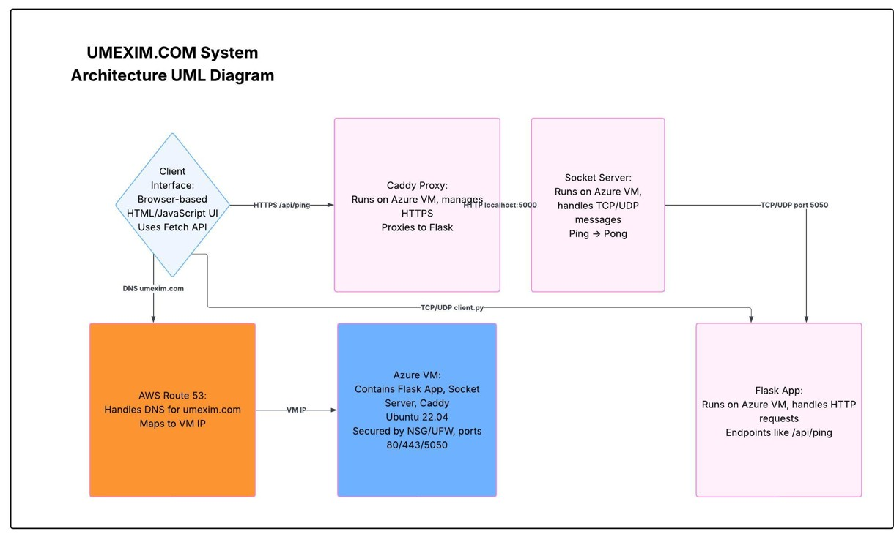

This diagram shows how DNS, frontend, backend, and socket components are structured in the UMEXIM.COM system.
This SWE4303 Computing Infrastructure project for Regent College London (HE26228 - 2025), powers an eco-friendly e-commerce marketplace. The Azure-hosted frontend (umexim.com) connects securely via HTTPS to a Flask backend running on an Azure VM (api.umexim.com), with DNS routing managed through AWS Route 53.
Test the system:
- /api/ping checks backend connectivity.
- /api/message mimics product queries or transactions.
Please Click the buttons below to validate integration. Results will appear as alert popups, demonstrating successful client-server communication.